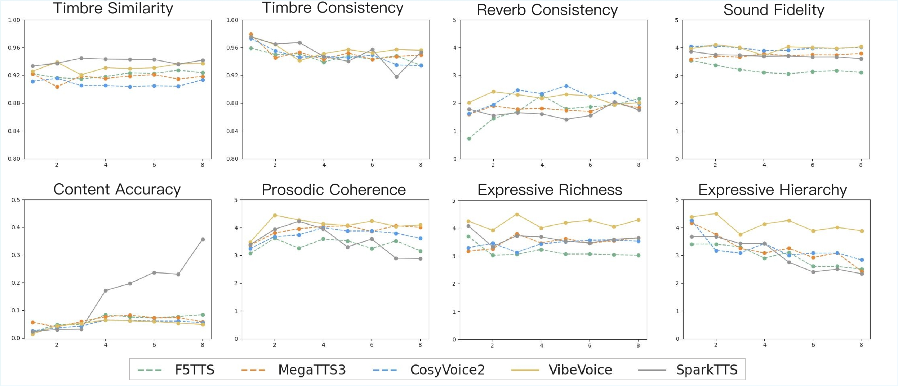

Results on Sequence Length. The horizontal axis represents the number of sentences in the text.
Spark-TTS
Refrence text: 啊我是去年刚刚大学毕业的，我这个大学专业学的是哲学啊。
Refrence text: 啊我是去年刚刚大学毕业的，我这个大学专业学的是哲学啊，大家一般听到那个反应就是哇，那就是有文化没工作，这个我读哲学确实是不太好找工作
Refrence text: 啊我是去年刚刚大学毕业的，我这个大学专业学的是哲学啊，大家一般听到那个反应就是哇，那就是有文化没工作，这个我读哲学确实是不太好找工作，而且我身边有些朋友还会调侃我，说，找不到工作怎么了，你们学哲学的人不是都很通透吗?
Refrence text:啊我是去年刚刚大学毕业的，我这个大学专业学的是哲学啊，大家一般听到那个反应就是哇，那就是有文化没工作，这个我读哲学确实是不太好找工作，而且我身边有些朋友还会调侃我，说，找不到工作怎么了，你们学哲学的人不是都很通透吗，你虽然找不到工作，但是你可以辩证地看待这个问题啊。
Refrence text: 啊我是去年刚刚大学毕业的，我这个大学专业学的是哲学啊，大家一般听到那个反应就是哇，那就是有文化没工作，这个我读哲学确实是不太好找工作，而且我身边有些朋友还会调侃我，说，找不到工作怎么了，你们学哲学的人不是都很通透吗，你虽然找不到工作，但是你可以辩证地看待这个问题啊，我咋辩证啊,说实话我真的一点都不通透，因为我学完哲学吧，跟大家学任何专业一样，还是要出来找工作打工的。
Refrence text: 啊我是去年刚刚大学毕业的，我这个大学专业学的是哲学啊，大家一般听到那个反应就是哇，那就是有文化没工作，这个我读哲学确实是不太好找工作，而且我身边有些朋友还会调侃我，说，找不到工作怎么了，你们学哲学的人不是都很通透吗，你虽然找不到工作，但是你可以辩证地看待这个问题啊，我咋辩证啊，说实话我真的一点都不通透，因为我学完哲学吧，跟大家学任何专业一样，还是要出来找工作打工的，我发现现实生活跟我学的不一样的时候，我只会更加矛盾。
Refrence text: 啊我是去年刚刚大学毕业的，我这个大学专业学的是哲学啊，大家一般听到那个反应就是哇，那就是有文化没工作，这个我读哲学确实是不太好找工作，而且我身边有些朋友还会调侃我，说，找不到工作怎么了，你们学哲学的人不是都很通透吗，你虽然找不到工作，但是你可以辩证地看待这个问题啊，我咋辩证啊，说实话我真的一点都不通透，因为我学完哲学吧，跟大家学任何专业一样，还是要出来找工作打工的，我发现现实生活跟我学的不一样的时候，我只会更加矛盾。我那时候找工作的时候，我上午还在上课, 我学那个资本论, 什么资本会无情的压榨你，剥削你的剩余价值, 资本来到世间，从头到脚都流着血跟肮脏的东西。
Refrence text: 啊我是去年刚刚大学毕业的，我这个大学专业学的是哲学啊，大家一般听到那个反应就是哇，那就是有文化没工作，这个我读哲学确实是不太好找工作，而且我身边有些朋友还会调侃我，说，找不到工作怎么了，你们学哲学的人不是都很通透吗，你虽然找不到工作，但是你可以辩证地看待这个问题啊，我咋辩证啊，说实话我真的一点都不通透，因为我学完哲学吧，跟大家学任何专业一样，还是要出来找工作打工的，我发现现实生活跟我学的不一样的时候，我只会更加矛盾。我那时候找工作的时候，我上午还在上课，我学那个资本论，什么资本会无情的压榨你，剥削你的剩余价值，资本来到世间，从头到脚都流着血跟肮脏的东西，我下午去面试的时候，往那一坐，我可以加班，什么亚里士多德呀，多劳才能多得。
MegaTTS-3
Refrence text: Hi, I'm Rose Rimmler. I'm filling in for Wendy Zuckerman. And this is Science versus.
Refrence text: Hi, I'm Rose Rimmler. I'm filling in for Wendy Zuckerman. And this is Science versus. This is the show that pits facts against filling the world with AI data centers.
Refrence text: Hi, I'm Rose Rimmler. I'm filling in for Wendy Zuckerman. And this is Science versus. This is the show that pits facts against filling the world with AI data centers. Today on the show AI and the Environment, Lately we've been hearing a lot about how power hungry AI is.
Refrence text: Hi, I'm Rose Rimmler. I'm filling in for Wendy Zuckerman. And this is Science versus. This is the show that pits facts against filling the world with AI data centers. Today on the show AI and the Environment, Lately we've been hearing a lot about how power hungry AI is. AI uses a ton of electricity, straining the nation's aging power grid and creating more planet-warming emissions, and how thirsty it is.
Refrence text: Hi, I'm Rose Rimmler. I'm filling in for Wendy Zuckerman. And this is Science versus. This is the show that pits facts against filling the world with AI data centers. Today on the show AI and the Environment, Lately we've been hearing a lot about how power hungry AI is. AI uses a ton of electricity, straining the nation's aging power grid and creating more planet-warming emissions, and how thirsty it is. The amount of water that AI uses is astonishing.
Refrence text: Hi, I'm Rose Rimmler. I'm filling in for Wendy Zuckerman. And this is Science versus. This is the show that pits facts against filling the world with AI data centers. Today on the show AI and the Environment, Lately we've been hearing a lot about how power hungry AI is. AI uses a ton of electricity, straining the nation's aging power grid and creating more planet-warming emissions, and how thirsty it is. The amount of water that AI uses is astonishing. Asking ChatGPT to write one e-mail is the equivalent of pouring out an entire water bottle.
Refrence text: Hi, I'm Rose Rimmler. I'm filling in for Wendy Zuckerman. And this is Science versus. This is the show that pits facts against filling the world with AI data centers. Today on the show AI and the Environment, Lately we've been hearing a lot about how power hungry AI is. AI uses a ton of electricity, straining the nation's aging power grid and creating more planet-warming emissions, and how thirsty it is. The amount of water that AI uses is astonishing. Asking ChatGPT to write one e-mail is the equivalent of pouring out an entire water bottle. Let that sink in. And the major culprit here is the data centers, warehouses full of computer servers that AI needs to function.
Refrence text: Hi, I'm Rose Rimmler. I'm filling in for Wendy Zuckerman. And this is Science versus. This is the show that pits facts against filling the world with AI data centers. Today on the show AI and the Environment, Lately we've been hearing a lot about how power hungry AI is. AI uses a ton of electricity, straining the nation's aging power grid and creating more planet-warming emissions, and how thirsty it is. The amount of water that AI uses is astonishing. Asking ChatGPT to write one e-mail is the equivalent of pouring out an entire water bottle. Let that sink in. And the major culprit here is the data centers, warehouses full of computer servers that AI needs to function. Tech companies are trying to build more of these data centers, but people who live nearby are protesting them, often saying that they're going to compete for their electricity and use up their water.
CosyVoice2
Refrence text: Are there any other parents here who have struggled to get your kids out the door on time? Yeah, so you know, right?
Refrence text: Are there any other parents here who have struggled to get your kids out the door on time? Yeah, so you know, right? It's like herding kittens. My wife and I would start nagging our three daughters long before it was time to leave, but that obviously wasn't working because we were always late for everything.
Refrence text: Are there any other parents here who have struggled to get your kids out the door on time? Yeah, so you know, right? It's like herding kittens. My wife and I would start nagging our three daughters long before it was time to leave, but that obviously wasn't working because we were always late for everything. But one day was a complete gong show. Five minutes before we needed to leave for an important event, I found my oldest daughter on the porch reading, my middle daughter was playing the piano, and my youngest daughter wasn't wearing any socks.
Refrence text: Are there any other parents here who have struggled to get your kids out the door on time? Yeah, so you know, right? It's like herding kittens. My wife and I would start nagging our three daughters long before it was time to leave, but that obviously wasn't working because we were always late for everything. But one day was a complete gong show. Five minutes before we needed to leave for an important event, I found my oldest daughter on the porch reading, my middle daughter was playing the piano, and my youngest daughter wasn't wearing any socks. So I told them, \"Stop reading, stop playing the piano, put on your socks, and everybody get in the car.\"
Refrence text: Are there any other parents here who have struggled to get your kids out the door on time? Yeah, so you know, right? It's like herding kittens. My wife and I would start nagging our three daughters long before it was time to leave, but that obviously wasn't working because we were always late for everything. But one day was a complete gong show. Five minutes before we needed to leave for an important event, I found my oldest daughter on the porch reading, my middle daughter was playing the piano, and my youngest daughter wasn't wearing any socks. So I told them, \"Stop reading, stop playing the piano, put on your socks, and everybody get in the car.\" Five minutes later, nobody was in the car. On my way to help my youngest daughter wear her socks, I noticed my oldest daughter was still on the porch reading.
Refrence text: Are there any other parents here who have struggled to get your kids out the door on time? Yeah, so you know, right? It's like herding kittens. My wife and I would start nagging our three daughters long before it was time to leave, but that obviously wasn't working because we were always late for everything. But one day was a complete gong show. Five minutes before we needed to leave for an important event, I found my oldest daughter on the porch reading, my middle daughter was playing the piano, and my youngest daughter wasn't wearing any socks. So I told them, \"Stop reading, stop playing the piano, put on your socks, and everybody get in the car.\" Five minutes later, nobody was in the car. On my way to help my youngest daughter wear her socks, I noticed my oldest daughter was still on the porch reading. Now I'm starting to lose it. Her response: \"I didn't hear you.\" But before I could say a word, I heard the piano start playing again.
Refrence text: Are there any other parents here who have struggled to get your kids out the door on time? Yeah, so you know, right? It's like herding kittens. My wife and I would start nagging our three daughters long before it was time to leave, but that obviously wasn't working because we were always late for everything. But one day was a complete gong show. Five minutes before we needed to leave for an important event, I found my oldest daughter on the porch reading, my middle daughter was playing the piano, and my youngest daughter wasn't wearing any socks. So I told them, \"Stop reading, stop playing the piano, put on your socks, and everybody get in the car.\" Five minutes later, nobody was in the car. On my way to help my youngest daughter wear her socks, I noticed my oldest daughter was still on the porch reading. Now I'm starting to lose it. Her response: \"I didn't hear you.\" But before I could say a word, I heard the piano start playing again. And that's the story of how I lost my mind. The end. I just wanted my daughters to take a little ownership for getting out the door in time. But then I remembered something I teach management teams: You can't inspire accountability in others until you model it yourself. That's when I realized I wasn't taking any accountability for this problem.
Refrence text: Are there any other parents here who have struggled to get your kids out the door on time? Yeah, so you know, right? It's like herding kittens. My wife and I would start nagging our three daughters long before it was time to leave, but that obviously wasn't working because we were always late for everything. But one day was a complete gong show. Five minutes before we needed to leave for an important event, I found my oldest daughter on the porch reading, my middle daughter was playing the piano, and my youngest daughter wasn't wearing any socks. So I told them, \"Stop reading, stop playing the piano, put on your socks, and everybody get in the car.\" Five minutes later, nobody was in the car. On my way to help my youngest daughter wear her socks, I noticed my oldest daughter was still on the porch reading. Now I'm starting to lose it. Her response: \"I didn't hear you.\" But before I could say a word, I heard the piano start playing again. And that's the story of how I lost my mind. The end. I just wanted my daughters to take a little ownership for getting out the door in time. But then I remembered something I teach management teams: You can't inspire accountability in others until you model it yourself. That's when I realized I wasn't taking any accountability for this problem. I was blaming it totally on my daughters. So I tried a different approach and looked in the mirror. What was I doing or not doing that may be contributing to this problem? Then it hit me. I knew when they needed to be finished with breakfast, dressed, groomed, and ready to leave. But did they? I also knew what time it was. But there were no clocks in their bathrooms. Which I discovered is like a different dimension for my girls where time ceases to exist.
F5TTS
Refrence text: We really deeply loved each other. The way it ended was so pleasant that I think I can talk about it without crying right now.
Refrence text: We really deeply loved each other. The way it ended was so pleasant that I think I can talk about it without crying right now. It's only been a week, and I can talk about it because it was mutual.
Refrence text: We really deeply loved each other. The way it ended was so pleasant that I think I can talk about it without crying right now. It's only been a week, and I can talk about it because it was mutual. We communicated, got closure, and decided to remain friends.
Refrence text: We really deeply loved each other. The way it ended was so pleasant that I think I can talk about it without crying right now. It's only been a week, and I can talk about it because it was mutual. We communicated, got closure, and decided to remain friends. It was as perfect a breakup as possible, but it's still tough. So, what does this mean for me?
Refrence text: We really deeply loved each other. The way it ended was so pleasant that I think I can talk about it without crying right now. It's only been a week, and I can talk about it because it was mutual. We communicated, got closure, and decided to remain friends. It was as perfect a breakup as possible, but it's still tough. So, what does this mean for me? Well, now I'm single, and being single is interesting because I haven't been single much in my life since I was 17.
Refrence text: We really deeply loved each other. The way it ended was so pleasant that I think I can talk about it without crying right now. It's only been a week, and I can talk about it because it was mutual. We communicated, got closure, and decided to remain friends. It was as perfect a breakup as possible, but it's still tough. So, what does this mean for me? Well, now I'm single, and being single is interesting because I haven't been single much in my life since I was 17. I've dated pretty consistently, with a few boyfriends, and very short breaks in between, so I haven't really been single. It's a little daunting to be in this place again.
Refrence text: We really deeply loved each other. The way it ended was so pleasant that I think I can talk about it without crying right now. It's only been a week, and I can talk about it because it was mutual. We communicated, got closure, and decided to remain friends. It was as perfect a breakup as possible, but it's still tough. So, what does this mean for me? Well, now I'm single, and being single is interesting because I haven't been single much in my life since I was 17. I've dated pretty consistently, with a few boyfriends, and very short breaks in between, so I haven't really been single. It's a little daunting to be in this place again. This time, I know I should be single longer than just two or three months — maybe for a year.
Refrence text: We really deeply loved each other. The way it ended was so pleasant that I think I can talk about it without crying right now. It's only been a week, and I can talk about it because it was mutual. We communicated, got closure, and decided to remain friends. It was as perfect a breakup as possible, but it's still tough. So, what does this mean for me? Well, now I'm single, and being single is interesting because I haven't been single much in my life since I was 17. I've dated pretty consistently, with a few boyfriends, and very short breaks in between, so I haven't really been single. It's a little daunting to be in this place again. This time, I know I should be single longer than just two or three months — maybe for a year. I feel it in my gut, and I know it's right, but it's daunting.
VibeVoice
Refrence text: 啊我是去年刚刚大学毕业的，我这个大学专业学的是哲学啊。
Refrence text: 啊我是去年刚刚大学毕业的，我这个大学专业学的是哲学啊，大家一般听到那个反应就是哇，那就是有文化没工作，这个我读哲学确实是不太好找工作。
Refrence text: 啊我是去年刚刚大学毕业的，我这个大学专业学的是哲学啊，大家一般听到那个反应就是哇，那就是有文化没工作，这个我读哲学确实是不太好找工作，而且我身边有些朋友还会调侃我，说，找不到工作怎么了，你们学哲学的人不是都很通透吗？
Refrence text: 啊我是去年刚刚大学毕业的，我这个大学专业学的是哲学啊，大家一般听到那个反应就是哇，那就是有文化没工作，这个我读哲学确实是不太好找工作，而且我身边有些朋友还会调侃我，说，找不到工作怎么了，你们学哲学的人不是都很通透吗，你虽然找不到工作，但是你可以辩证地看待这个问题啊。
Refrence text: 啊我是去年刚刚大学毕业的，我这个大学专业学的是哲学啊，大家一般听到那个反应就是哇，那就是有文化没工作，这个我读哲学确实是不太好找工作，而且我身边有些朋友还会调侃我，说，找不到工作怎么了，你们学哲学的人不是都很通透吗，你虽然找不到工作，但是你可以辩证地看待这个问题啊，我咋辩证啊,说实话我真的一点都不通透，因为我学完哲学吧，跟大家学任何专业一样，还是要出来找工作打工的。
Refrence text: 啊我是去年刚刚大学毕业的，我这个大学专业学的是哲学啊，大家一般听到那个反应就是哇，那就是有文化没工作，这个我读哲学确实是不太好找工作，而且我身边有些朋友还会调侃我，说，找不到工作怎么了，你们学哲学的人不是都很通透吗，你虽然找不到工作，但是你可以辩证地看待这个问题啊，我咋辩证啊，说实话我真的一点都不通透，因为我学完哲学吧，跟大家学任何专业一样，还是要出来找工作打工的，我发现现实生活跟我学的不一样的时候，我只会更加矛盾。
Refrence text: 啊我是去年刚刚大学毕业的，我这个大学专业学的是哲学啊，大家一般听到那个反应就是哇，那就是有文化没工作，这个我读哲学确实是不太好找工作，而且我身边有些朋友还会调侃我，说，找不到工作怎么了，你们学哲学的人不是都很通透吗，你虽然找不到工作，但是你可以辩证地看待这个问题啊，我咋辩证啊，说实话我真的一点都不通透，因为我学完哲学吧，跟大家学任何专业一样，还是要出来找工作打工的，我发现现实生活跟我学的不一样的时候，我只会更加矛盾。我那时候找工作的时候，我上午还在上课, 我学那个资本论, 什么资本会无情的压榨你，剥削你的剩余价值, 资本来到世间，从头到脚都流着血跟肮脏的东西。
Refrence text: 啊我是去年刚刚大学毕业的，我这个大学专业学的是哲学啊，大家一般听到那个反应就是哇，那就是有文化没工作，这个我读哲学确实是不太好找工作，而且我身边有些朋友还会调侃我，说，找不到工作怎么了，你们学哲学的人不是都很通透吗，你虽然找不到工作，但是你可以辩证地看待这个问题啊，我咋辩证啊，说实话我真的一点都不通透，因为我学完哲学吧，跟大家学任何专业一样，还是要出来找工作打工的，我发现现实生活跟我学的不一样的时候，我只会更加矛盾。我那时候找工作的时候，我上午还在上课，我学那个资本论，什么资本会无情的压榨你，剥削你的剩余价值，资本来到世间，从头到脚都流着血跟肮脏的东西，我下午去面试的时候，往那一坐，我可以加班，什么亚里士多德呀，多劳才能多得。